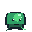
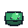
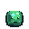
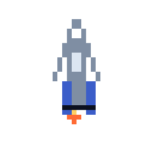
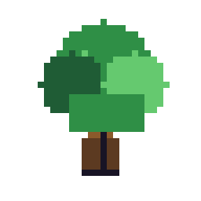
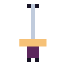
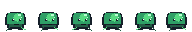

Determinista
Coordenadas enteras, colores RGBA y render sin antialiasing para resultados idénticos cada vez.
Pixel art reproducible · Rust · .pix DSL
pix convierte una DSL mínima en PNGs nítidos, GIFs animados y spritesheets con metadata. Sin antialiasing, sin sorpresas: arte determinista listo para juegos, docs y prototipos.



pix gif examples/slime_showcase.pix -a walk -o slime.gif
Coordenadas enteras, colores RGBA y render sin antialiasing para resultados idénticos cada vez.
Define colores con nombres y activa strict_palette para evitar tonos accidentales.
Describe frames, fps y secuencias; exporta GIFs, frames PNG o spritesheets con JSON.
Usa grupos con coordenadas locales para crear sprites legibles, reutilizables y fáciles de revisar.
Showcase




Código que dibuja
Los sprites viven en archivos .pix, así que puedes revisarlos en pull requests, formatearlos, validarlos y regenerarlos en CI.
canvas 16 16
background transparent
strict_palette true
palette {
O #181425
G #3fa34d
L #7bd88f
}
frame idle-1 {
group slime at 3 5 {
rect 0 1 10 5 G
pixel 2 2 O
pixel 7 2 O
circle 5 3 2 L
}
}Instalación
cargo install --path .
pix check examples/slime_anim.pix
pix render examples/slime.pix -o output/slime.png
pix sheet examples/slime_anim.pix -a idle -o sheet.png --json sheet.json